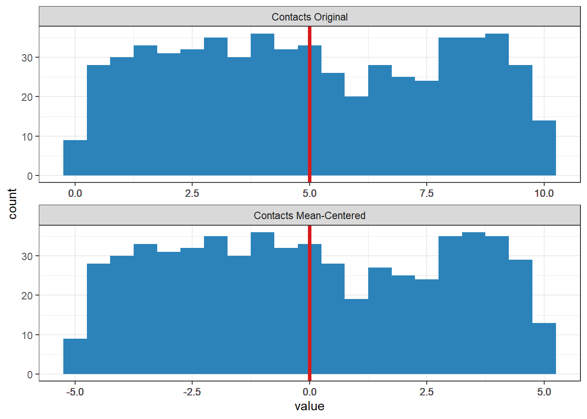
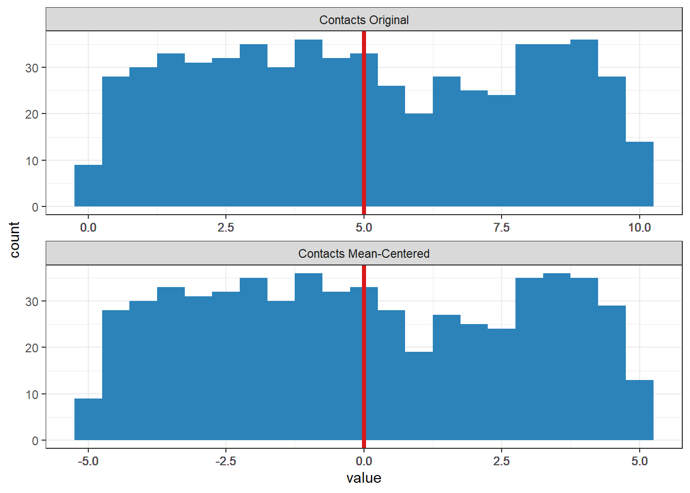
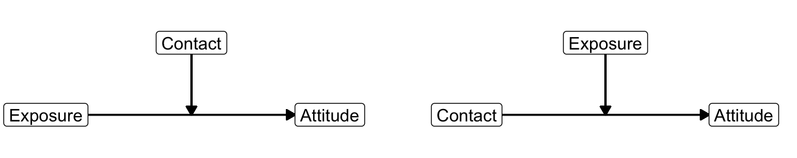
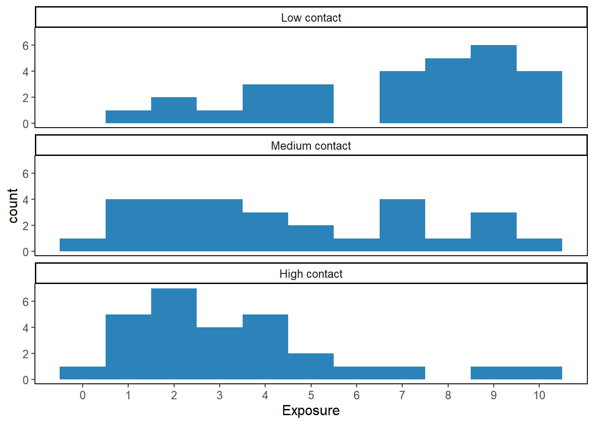
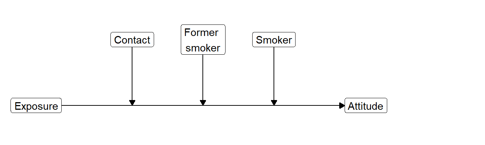
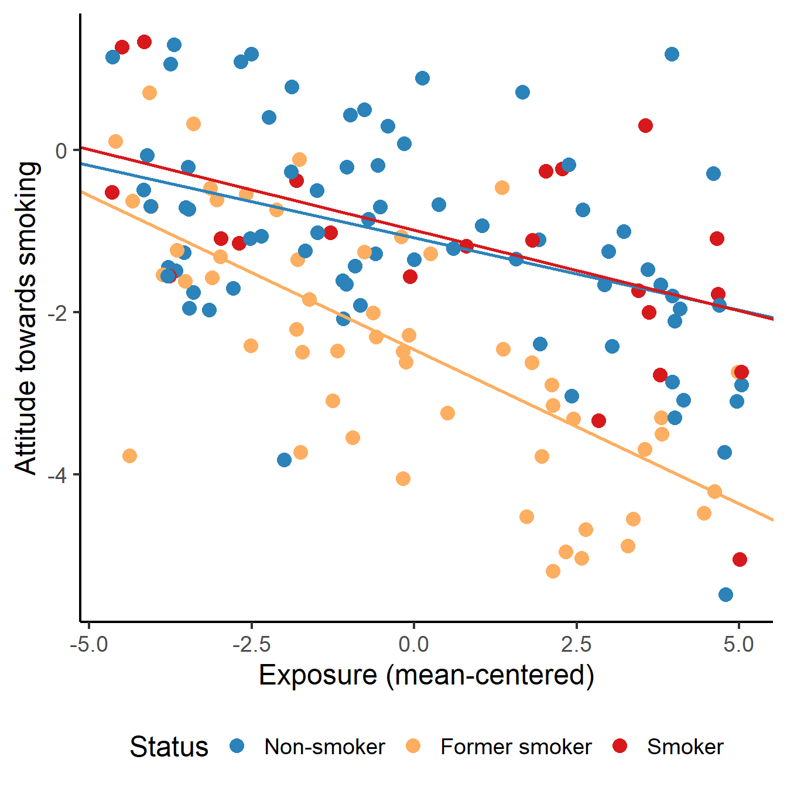
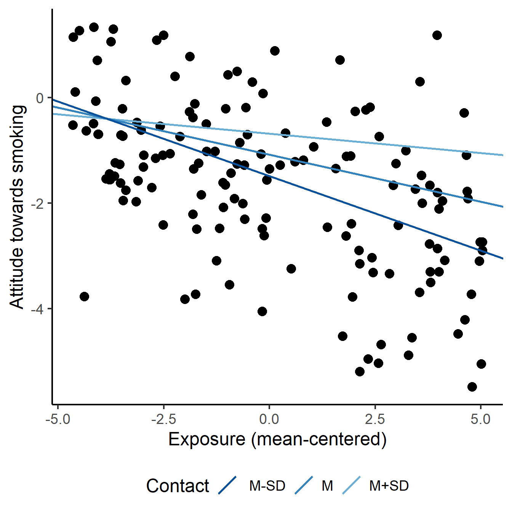

Warning: Using `size` aesthetic for lines was deprecated in ggplot2 3.4.0.
ℹ Please use `linewidth` instead.
Key concepts: interaction variable, common support, simple slope, conditional effect, mean-centering.
Watch this micro lecture (Video 7.1) on regression models with a numerical moderator for an overview of the chapter.
My moderator is numerical. How can I construct different regression lines for different moderator values?
Chapter 6 shows us how we can include dichotomous and categorical variables as predictors and moderators in a regression model. Using dummy variables, we can analyze mean differences between groups and we can construct different regression lines for different groups (moderation). A graph showing the different regression models for different moderator groups communicates the results of a moderation model in an attractive way.
What if our moderator is not dichotomous or categorical but numerical? For example, the effect of exposure to an anti-smoking campaign on attitude towards smoking can be different for people of different age or for people who spend more time with smokers.
We can include a numerical moderator in a regression model just like a dichotomous moderator. Add the predictor, the moderator, and an interaction variable, which is the product of the moderator and the predictor. If both the predictor and moderator are numerical, the interaction variable is numerical. It gives us numbers, not groups.
The interpretation of an interaction effect is different if the moderator is numerical instead of dichotomous or categorical. In general, the regression coefficient of a numerical variable expresses the effect of a one unit change. For a numerical predictor, this is the predicted change in the dependent variable. For a numerical moderator, however, it is the predicted change in the effect of the predictor. The unstandardized regression coefficient for a numerical moderator, then, tells us the predicted change in the effect of the predictor for a one unit increase in the moderator.
This interpretation is quite abstract and not easy to understand. It is better to visualize the regression lines for different values of the moderator. We usually draw regression lines for three interesting moderator values. The mean value of the moderator shows us the effect at a medium level of the moderator. One standard deviation below or above the mean of the moderator represent attractive low and high moderator values.
Just like a model with a dichotomous or categorical moderator, the effect of a predictor that is involved in moderation is a conditional effect. In other words, it is the effect of that predictor conditioned under one particular value of the moderator, namely the value zero. Unfortunately, zero is not always a meaningful value for the moderator. If it does not exist or appears rarely on the moderator, it is better to mean-center the moderator. Mean-centering a variable changes the scores such that the mean of the original variable becomes zero on the mean-centered variable. The value zero is always meaningful for a mean-centered variable because it represents the mean score on the original variable. With a mean-centered moderator, the regression coefficient of the predictor always makes sense.
With a categorical moderator, it is quite obvious for which values of the moderator we are going to calculate and depict the effect of the predictor on the dependent variable. If smoking status moderates the effect of exposure on attitude towards smoking, we will inspect a regression line for each smoking status category: smokers, former smokers, and non-smokers. But what if the moderator is a numerical variable, for example, the intensity of contact with smokers?
People hanging around a lot with smokers may have a more positive attitude towards smoking than people who have little contact with smokers. If people whose company you value are smokers, you are less likely to condemn smoking. This is an overall effect of contact with smokers on attitude towards smoking.
In addition, the anti-smoking campaign may be less effective for people who spend a lot of time with smokers. The attitude towards smoking may be stronger among people who spend more time with smokers, so it is more difficult to change the attitude. In this situation, contact with smokers decreases the effect of campaign exposure on attitude. The effect of exposure is moderated by contact with smokers.
Our moderator, contact with smokers, is numerical. As a consequence, we can have an endless number of contact levels as groups for which the slope may change. This is the only difference with a categorical moderator. Other than that, we will analyze a numerical moderator in the same way as we analyzed a categorical moderator.
We need one interaction variable to include a numerical moderator in a regression model. As before, the interaction variable is the product of the predictor and the moderator. Multiply the predictor by the moderator to obtain the interaction variable.
Although we have an endless number of different moderator values or “groups”, we only need one interaction variable. It represents the gradual (linear) change of the effect of the predictor for higher values of the moderator.
\[\begin{equation} \small \begin{split} attitude = &\ constant + b_1*exposure + b_2*contact + b_3*exposure*contact \\ attitude = &\ constant + (b_1 + b_3*contact)*exposure + b_2*contact \end{split} (\#eq:simplecontact) \normalsize \end{equation}\]To see this, it is helpful to inspect the regression equation with rearranged terms [Equation @ref(eq:simplecontact)]. Every additional contact with smokers adds \(b_3\) to the slope \((b_1 + b_3*contact)\) of the exposure effect. The addition is gradual—a little bit of additional contact with smokers changes the exposure effect a little bit—and it is linear: A unit increase in contact adds the same amount to the effect whether the effect is at a low or a high level.
We can interpret the regression coefficient of the interaction effect (\(b_3\)) here as the predicted change in the exposure effect (slope) for a one unit difference in contact (the moderator). A positive coefficient indicates that the exposure effect is more positive (or less negative) for higher levels of contact with smokers. A negative coefficient indicates that the effect is more negative (or less positive) for people with more contacts with smokers.
Note that positive and negative are used here in their mathematical meaning, not in an appreciative way. A positive effect of exposure implies a more positive attitude towards smoking. Anti-smoking campaigners probably evaluate this as a negative result.
In the presence of an interaction effect of exposure and contact, the regression coefficients for exposure and contact represent conditional effects (see Section 6.3.3), namely, the effects for cases that score zero on the other variable. Plug in zero for the moderator and you will see that all terms with a moderator drop from the equation and only \(b_1\) is left as the effect of exposure.
\[\begin{equation} \small \begin{split} attitude = &\ constant + (b_1 + b_3*contact)*exposure + b_2*contact \\ attitude = &\ constant + (b_1 + b_3*0)*exposure + b_2*0 \\ attitude = &\ constant + b_1*exposure \end{split} (\#eq:conditionaleffect) \normalsize \end{equation}\]The zero score on the moderator is the reference value for the conditional effect of the predictor. Cases that score zero on the moderator are the reference group just like cases scoring zero on all dummy variables are the reference group in a model with a categorical moderator (Section 6.1.2).
Because the effect of a predictor involved in an interaction is a conditional effect, a zero score on the moderator has a special role. It is the reference value for the effect of the predictor. For example, the effect of exposure on attitude applies to respondents with zero contacts with smokers if the regression model includes an exposure by contact interaction. If zero on the moderator is so important as a reference value, we may want to manipulate this value to ensure that it is meaningful.
What if there are no people with zero contact? Then, the interpretation of the regression coefficient \(b_1\) for exposure does not make sense. In this situation, it is better to mean-center the moderator (contact) before you add it to the regression equation and before you calculate the interaction variable.
To mean-center a variable, you subtract the variable’s mean from all scores on the variable. As a result, a mean score on the original variable becomes a zero score on the mean-centered variable.
\[\begin{equation*} \small contactcentered = contact - mean(contact) \normalsize \end{equation*}\]Mean-centering shifts the values of a variable such that the mean of the new variable becomes zero (Figure 7.3). Below-average values on the original variable are negative on a mean-centered variable and above-average values are positive. The shape of the distribution remains the same.
Warning: Using `size` aesthetic for lines was deprecated in ggplot2 3.4.0.
ℹ Please use `linewidth` instead.
With mean-centered numerical moderators, a conditional effect in the presence of interaction always makes sense. It is the effect of the predictor for respondents who have an average score on the moderator because they score zero on the mean-centered variable. An average score always falls within the range of scores that actually occur. If we mean-center the moderator variable contact with smokers, the regression coefficient \(b_1\) for exposure expresses the effect of exposure on attitude for people with average contacts with smokers. This makes sense.
Remember that the interaction variable is the product of the predictor and moderator (Section 6.3.2). If any or both of these are mean-centered, you should multiply the mean-centered variable(s) to create the interaction variable.
If we want to interpret the conditional effect of contact on attitude (\(b_2\)), we must realize that this is the effect for people who score zero on the exposure variable if the exposure by contact interaction is included in the regression model. This is clear if we rearrange the regression equation as in Equation @ref(eq:contactbyexposure).
\[\begin{equation} \small \begin{split} attitude = &\ constant + b_1*exposure + b_2*contact + b_3*exposure*contact \\ attitude = &\ constant + b_1*exposure + (b_2 + b_3*exposure)*contact \\ attitude = &\ constant + b_1*0 + (b_2 + b_3*0)*contact \\ attitude = &\ constant + b_2*contact \end{split} (\#eq:contactbyexposure) \normalsize \end{equation}\]But wait a minute, this is what we would do if contact was the predictor and exposure the moderator. That is a completely different situation, is it not? No, technically it does not make a difference which variable is the predictor and which is the moderator (Figure 7.4). The predictor and moderator are symmetric. The difference is only in our theoretical expectations and in our interpretation.
Warning in geom_segment(aes(x = x[1], y = y[1], xend = x[3], yend = y[1]), : All aesthetics have length 1, but the data has 6 rows.
ℹ Please consider using `annotate()` or provide this layer with data containing
a single row.Warning in geom_segment(aes(x = x[2], y = y[2], xend = x[2], yend = y[1]), : All aesthetics have length 1, but the data has 6 rows.
ℹ Please consider using `annotate()` or provide this layer with data containing
a single row.Warning in geom_segment(aes(x = x[4], y = y[4], xend = x[6], yend = y[4]), : All aesthetics have length 1, but the data has 6 rows.
ℹ Please consider using `annotate()` or provide this layer with data containing
a single row.Warning in geom_segment(aes(x = x[5], y = y[5], xend = x[5], yend = y[4]), : All aesthetics have length 1, but the data has 6 rows.
ℹ Please consider using `annotate()` or provide this layer with data containing
a single row.
For example, let us assume that the regression coefficient of the interaction effect of exposure and contact is 0.2. We can interpret this regression coefficient with contact as moderator and exposure as predictor: An additional unit of contact with smokers increases the effect of exposure on attitude by 0.2. But we can also interpret it with exposure as moderator and contact as predictor: An additional unit of exposure increases the effect of contact with smokers on attitude by 0.2.
The conditional effect of the moderator, as stated above, is the effect of the moderator if the predictor is zero. This interpretation makes sense only if there are cases with zero scores on the predictor. In the current example, the scores on exposure range from 0 to 10, so zero exposure is meaningful. But it represents a borderline score with perhaps a very atypical effect of contact on attitude or few observations. For these reasons, it is recommended to mean-center both the predictor and moderator if they are numerical. In case of a dichotomous or categorical moderator (Section 6.3), the predictor can also be mean-centered.
It can be quite tricky to interpret regression coefficients in a regression model that contains interaction effects. The safest strategy is to draw regression lines for different values of the moderator. But what are interesting values if the moderator is numerical?
As we have seen in Section 7.1.1, the regression coefficient of an interaction effect with a numerical moderator can be directly interpreted. It represents the predicted difference in the unstandardized effect size for a one unit increase in the moderator. For example, one more contact with a smoker increases the exposure effect by 0.04.
The size of the interaction effect tells us the moderation trend, for instance, people who are more around smokers tend to be less opposed to smoking if they are exposed to the anti-smoking campaign. But we do not know how much an anti-smoking attitude is fostered by exposure to a campaign and whether exposure to the campaign increases anti-smoking attitude for everyone. Perhaps, people hanging out with smokers a lot may even get a more positive attitude towards smoking from campaign exposure.
We can be more specific about exposure effects at different levels of contact with smokers if we pick some interesting values of the moderator and calculate the conditional effects at these levels.
The minimum or maximum values of the moderator are usually not very interesting. We tend to have few observations for these values, so our confidence in the estimated effect at that level is low. Instead, the values one standard deviation below and above the mean of the moderator are popular values to be picked. One standard deviation below the mean (M - SD) indicates a low value, the mean (M) indicates a central value, and one standard deviation above the mean (M + SD) indicates a high value.
| B | Std. Error | Beta | t | Sig. | Lower Bound | Upper Bound | |
|---|---|---|---|---|---|---|---|
| (Constant) | 0.169 | 0.204 | 0.825 | 0.412 | -0.238 | 0.575 | |
| Exposure (mean-centered) | -0.174 | 0.063 | -0.308 | -2.740 | 0.008 | -0.300 | -0.048 |
| Contact (mean-centered) | 0.159 | 0.094 | 0.188 | 1.685 | 0.096 | -0.029 | 0.347 |
| Status (smoker) | 0.533 | 0.405 | 0.131 | 1.318 | 0.191 | -0.272 | 1.338 |
| Exposure*Contact (mean-centered) | 0.018 | 0.034 | 0.063 | 0.533 | 0.595 | -0.049 | 0.085 |
The regression model yields a p value and confidence interval for the predictor at the reference value of the moderator. In the model estimated in Table 7.1, for instance, we obtain a p value of 0.008 and a 95% confidence interval of [-0.30, -0.05] for the effect of exposure on attitude. This is the conditional effect of exposure on attitude for cases that score zero on the moderator variable (contact with smokers).
If the moderator variable contact is mean-centered, the p value tests the null hypothesis that the effect of exposure is zero for people who have average contact with smokers. The confidence interval tells us that the effect of exposure on attitude for people with average contacts with smokers in the population ranges between -0.30 and -0.05 with 95% confidence. If the moderator is not mean-centered, the results apply to people who have no contact with smokers.
Note that mean-centering of the moderator changes, so to speak, the regression line that we test. Instead of testing the effect of exposure for people with no smoker contact, we test the effect for people with average contact with smokers if the moderator is mean-centered. If we would like to get the p value or confidence interval for the regression line at one standard deviation above (or below) the mean, we have to center the moderator at that value before we estimate the regression model. In this course, however, we will not do so.
In Section 6.3.6, we checked the support of the predictor in the data for different groups of the moderator. The basic idea is that we can only sensibly estimate and interpret a conditional effect at a moderator level if we have observations over the entire range of the predictor. For each moderator group, we checked the distribution of the predictor.
With a numerical moderator we can also do this if we group moderator scores. Hainmueller et al. (2016) recommend creating three groups, each containing one third of all observations. These low, medium, and high groups correspond more or less with the minus one standard deviation/mean/plus one standard deviation values that we used for visualizing and testing conditional effects. Create a histogram for the predictor in each of these groups to check common support of moderation in the data, as explained in Video 6.9.

According to Figure 7.6, the predictor variable exposure covers the entire range from 0 to 10 at medium and high contact levels. At low contact level, however, the lowest exposure score is 1 instead of zero. In all, we have common support for moderation of the exposure effect by contact for exposure scores from 1 to 10. This is quite a broad range but we should note that we have few observations of low exposure at the low contact level as well as few observations of high exposure at the high contact level.
The general assumptions for regression analysis (Section 6.1.4) also apply to a regression model with a moderator (interaction effect). The checks are the same: See if the residuals are more or less normally distributed and check the residuals by predicted values plot.
Note that the linearity assumption also applies to the interaction effect. If the interaction effect is positive, the exposure (predictor) effect must be higher for higher values of contact with smokers (moderator). More precisely, a unit difference on the moderator should result in a fixed increase (or decrease) of the effect of the predictor. You may have noticed this linear change in the effect size in Figure 7.1 at the beginning of this section on numerical moderators.
It is difficult to check this assumption, so let us not pursue this here. Just remember that the interaction effect is assumed to be linear: a gradually increasing or decreasing effect of the predictor at higher moderator values.
An interaction effect with one moderator, whether numerical or categorical, is called first-order interaction or two-way interaction. It is possible to have a moderated effect that is moderated itself by a second moderator. For example, the change in the exposure effect due to a person’s contact with smokers may be different for smokers than for non-smokers. This is called a second-order interaction or three-way interaction. We can include more moderators, yielding even higher-order interactions, such as three or four moderators.
An interaction variable that is the product of the predictor and two moderators can be used to include a second-order interaction in a regression model. If you include a second-order interaction, you must also include the effects of the variables involved in the interaction as well as all first-order interactions among these variables in the regression model. All in all, these models become very complicated to interpret and they are beyond the scope of the current course.
If we report a regression model, we first present the significance test and predictive power of the entire regression model. We may report that the regression model is statistically significant, F (7, 142) = 28.64, p < 0.001, so the regression model very likely helps to predict attitude towards smoking in the population.
How well does the regression model predict attitude towards smoking? The effect size of a regression model or its predictive power is summarized by \(R^2\) (R Square), which is the proportion of the variance in the dependent variable scores (attitude towards smoking) that can be predicted with the regression model. In this example, \(R^2\) is 0.59, so the regression model predicts 59% of the variance in attitude towards smoking among the respondents. In communication research, \(R^2\) is usually smaller.
\(R^2\) tells us how well the regression model predicts the dependent variable in the sample. Every predictor that we add to the regression model helps to predict results in the sample even if the predictor does not help to predict the dependent variable in the population. For a better idea of the predictive power of the regression model in the population, we may use Adjusted R Square. Adjusted R Square is usually slightly lower than R Square. In the example, Adjusted R Square is 0.56 (not reported in Table 7.2).
| B | 95% CI | |
|---|---|---|
| Constant | -1.08*** | [-1.32, -0.85] |
| Exposure | -0.18*** | [-0.26, -0.10] |
| Contact | 0.21*** | [ 0.12, 0.30] |
| Former smoker | -1.38*** | [-1.74, -1.01] |
| Smoker | 0.10 | [-0.41, 0.60] |
| Exposure * Contact | 0.06*** | [ 0.02, 0.09] |
| Exposure * Former smoker | -0.20** | [-0.33, -0.07] |
| Exposure * Smoker | -0.02 | [-0.17, 0.13] |
| R^2^ | 0.59 | |
| F (7, 142) | 28.64*** | |
| Note. _N_ = 150. CI = confidence interval. | ||
| * *\* _p_ < .05. \*\* _p_ < .01. \*** _p_ < .001. |
As a next step, we discuss the size, statistical significance, and confidence intervals of the regression coefficients. If a predictor is involved in one or more interaction effects, we must be very clear about the reference value or reference group to which the effect applies. In the example below, non-smokers are the reference group on the smoking status variable because they are not represented by a dummy variable. Average number of contacts with smokers is the reference value on the contact variable because this variable is mean-centered.
Exposure, in our example, has a negative predictive effect on attitude towards smoking (b = -0.18) for non-smokers with average contacts with smokers, t = -4.37, p < .001, 95% CI [-0.26, -0.10]. Note that SPSS does not report the degrees of freedom for the t test on a regression coefficient, so we cannot report them.
Instead of presenting the numerical results in the text, we may summarize them in an APA style table, such as Table 7.2. Note that t and p values are not reported in this table, the focus is on the confidence intervals. The significance level is indicated by stars.
A sizable and statistically significant interaction effect signals that an effect is moderated. In the example reported in Table 7.2, the effect of exposure on attitude seems to be moderated by contact with smokers (b = 0.06, p < .001) and by smoking status (b = -0.20, p = 0.003 for former smoker).
Warning in geom_segment(aes(x = x[1], y = y[1], xend = x[5], yend = y[1]), : All aesthetics have length 1, but the data has 5 rows.
ℹ Please consider using `annotate()` or provide this layer with data containing
a single row.Warning in geom_segment(aes(x = x[2], y = y[2], xend = x[2], yend = y[1]), : All aesthetics have length 1, but the data has 5 rows.
ℹ Please consider using `annotate()` or provide this layer with data containing
a single row.Warning in geom_segment(aes(x = x[3], y = y[3], xend = x[3], yend = y[1]), : All aesthetics have length 1, but the data has 5 rows.
ℹ Please consider using `annotate()` or provide this layer with data containing
a single row.Warning in geom_segment(aes(x = x[4], y = y[4], xend = x[4], yend = y[1]), : All aesthetics have length 1, but the data has 5 rows.
ℹ Please consider using `annotate()` or provide this layer with data containing
a single row.
The regression coefficients for interaction effects must be interpreted as effect differences. For a categorical moderator, the coefficient describes the effect size difference between the category represented by the dummy variable and the reference group. The negative effect of exposure is stronger for former smokers than for the reference group non-smokers. The average difference is -0.20.
For a numerical moderator, we can interpret the general pattern reflected by the interaction effect. A positive interaction effect, such as 0.06 for the interaction between exposure and smoker contact, signals that the effect of exposure is more strongly positive or less strongly negative at higher levels of contact with smokers.
This interpretation in terms of effect differences remains difficult to understand. It is recommended to select some interesting values for the moderator and report the size of the effect for each value. For a categorical moderator, each category is of interest. For a numerical moderator, the mean and one standard deviation below and above the mean are usually interesting values. The regression coefficients show whether the effect is positive, negative, or nearly zero at different values of the moderator.
Visualize the regression lines for different values of the moderator in addition to presenting the numerical results. If the regression model contains covariates, mention the values that you have used for the covariates. Select one of the categories for a categorical covariate. For numerical covariates, the mean is a good choice. If you are working with mean-centered predictors, be sure to use the mean-centered predictor for the horizontal axis (as in Figure 7.7), not the original predictor.


The left panel in Figure 7.7 clearly shows that the effect of exposure on attitude is more or less the same for non-smokers and smokers. The effect is different for former smokers, for whom the exposure effect is more strongly negative. It is more difficult to communicate this conclusion with the table of regression coefficients.
Check that the predictor has good support at the selected values of the moderator. In the left-hand plot of Figure 7.7, the groups (colours) vary nicely over the entire range of the predictor exposure, so that is okay. We need histograms to check common support for the right-hand plot.
Do not report that common support of the predictor at different moderator values is good. If it is bad, warn the reader that we cannot fully trust the estimated moderation because we do not have a nice range of predictor values within each level of the moderator. If the predictor is supported only within a restricted range, you may report this range.
Finally, inspect the residual plots but do not include them in the report. Warn the reader if the assumptions of the linear regression model have not been met. Do not mention the assumptions if they have been met.
As in Chapter 6, we calculate an interaction variable as the product of the predictor and moderator (the Compute Variable option in the Transform menu) and we use it as one of the independent variables in a linear regression model (the Linear option in the Regression submenu).
The regression coefficient of the predictor tells us how much the predicted value of the dependent variable changes for a one unit increase in the predictor score for cases that score zero on the moderator. For example, one additional unit of exposure to the campaign decreases the attitude towards smoking by (-)0.53 for people with zero contacts with smokers (Figure 7.8, red box). The cases that score zero on the moderator (here: people with zero contacts with smokers) are the reference group; zero is the reference value.

It is wise to mean-center the moderator variable before we use it. To mean-center a variable, we first obtain the value of the variable’s mean with the Statistics option in the Frequencies submenu of Descriptive Statistics. Next, we use the Compute Variable option in the Transform menu to subtract this mean from the original variable.
The effect of exposure on attitude changes if we mean-center the moderator variable contact (Figure 7.8, green box). People with an average number of contacts with smokers score zero on the mean-centered variable, so they are the new reference group. Among people with an average number of contacts with smokers, one additional unit of exposure decreases the predicted attitude by (-)0.31.
The regression coefficient of the interaction effect (Figure 7.8, blue box) tells us how much the effect of the predictor changes if the moderator increases by one unit. One additional contact with a smoker increases the effect of exposure on attitude by 0.04, making it 0.04 less strongly negative or more strongly positive.
Communicate the results of a numerical moderator in a scatterplot (Scatter/Dot in the Legacy Dialogs submenu of the Graphs menu) with regression lines for the effect of the predictor at three moderator values: the mean value of the moderator, one standard deviation below the mean and one standard deviation above the mean (Figure 7.9). Get the mean and standard deviation of the moderator variable with the Statistics option in the Frequencies submenu of Descriptive Statistics and plug these values in the regression equation along with suitable values of any covariates. Add the resulting (simple) regression equations to the scatterplot with the Reference Line from Equation option in the Options menu of the Chart Editor.

An interaction variable represents moderation in a regression model also if the moderator is numerical.
An interaction variable is the product of the predictor and moderator.
The effect of the predictor in a model with an interaction variable does not represent a main or average effect. It is a conditional effect: The effect for cases that score zero on the moderator. The same applies to the effect of the moderator, which is the conditional effect for cases scoring zero on the predictor.
The unstandardized regression coefficient of the interaction variable specifies the predicted change in the effect of the predictor on the dependent variable for a one unit increase in the moderator variable.
We recommend to mean-center a numerical moderator and a numerical predictor that are involved in an interaction effect. Observations with a mean score on the moderator are a substantively interesting reference group.
To interpret moderation, describe the effects (slopes, unstandardized regression coefficients) and visualize the regression lines for some interesting levels of the moderator, such as the mean and one standard deviation below or above the mean.